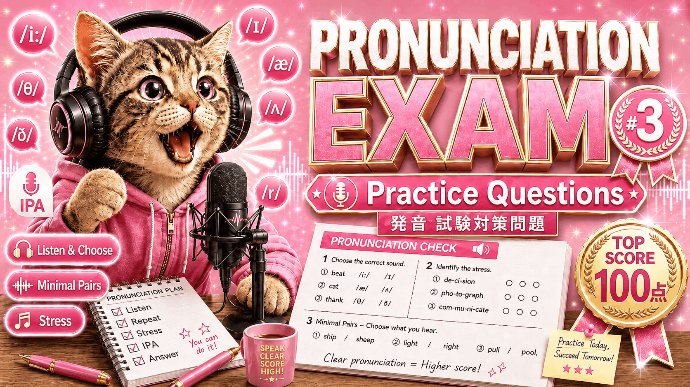

STEP 01
Listen and choose the vowel.
音声を聞いた後、単語に含まれる母音を選びましょう。全22問ご用意しています。
STEP 02
Listening Quiz
音声を聞いて、どちらの順番で読まれているかを選びましょう。

クイズを解いた後、音声を真似して声に出して練習しましょう。
今回は２つのSTEPを用意しております。それぞれに取り組みましょう！
STEP 01
音声を聞いた後、単語に含まれる母音を選びましょう。全22問ご用意しています。
STEP 02
音声を聞いて、どちらの順番で読まれているかを選びましょう。